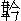

酒可陶情適性，兼能解悶消愁。三杯五盞樂悠悠，痛飲翻能損壽。謹厚化成凶險，精明變作昏流。禹疏儀狄豈無由？狂藥使人多咎。
這首詞名為《西江月》，是勸人節飲之語。今日說一位官員，只因貪杯上，受了非常之禍。話說這宣德年間，南直隸淮安府淮安衛，有個指揮姓蔡名武，家資富厚，婢僕頗多。平昔別無所好，偏愛的是杯中之物，若一見了酒，連性命也不相顧，人都叫他做「蔡酒鬼」。因這件上，罷官在家。不但蔡指揮會飲，就是夫人田氏，卻也一般善酌，二人也不像個夫妻，倒像兩個酒友。偏生奇怪，蔡指揮夫妻都會飲酒，生得三個兒女，卻又酒滴不聞。那大兒蔡韜，次子察略，年紀尚小。女兒倒有一十五歲，生時因見天上有一條虹霓，五色燦爛，正環在他家屋上，蔡武以為祥瑞，遂取名叫做瑞虹。那女子生得有十二分顏色，善能描龍畫鳳，刺繡拈花。不獨女工伶俐，且有智識才能，家中大小事體，倒是他掌管。因見父母日夕沉湎，時常規諫，蔡指揮哪裡肯依。
話分兩頭，且說那時有個兵部尚書趙貴，當年未達時，住在淮安衛間壁，家道甚貧，勤苦讀書，夜夜直讀到雞鳴方臥。
蔡武的父親老蔡指揮，愛他苦學，時常送柴送米，資助趙貴。
後來連科及第，直做到兵部尚書。思念老蔡指揮昔年之情，將蔡武特升了湖廣荊襄等處游擊將軍－－是一個上好的美缺，特地差人將文憑送與察武。
蔡武心中歡喜，與夫人商議，打點擇日赴任。瑞虹道：「爹爹，依孩兒看起來，此官莫去做罷！」蔡武道：「卻是為何？」
瑞虹道：「做官的一來圖名，二來圖利，故此千鄉萬里遠去。如今爹爹在家，日日只是吃酒，並不管一毫別事。倘若到任上也是如此，那個把銀子送來，豈不白白裡乾折了盤纏辛苦，路上還要擔驚受怕？就是沒得銀子趁，也只算是小事，還有別樣要緊事體，擔干係哩！」蔡武道：「除了沒銀子趁罷了，還有甚麼干紀？」瑞虹道：「爹爹，你一向做官時，不知見過多少了，難道這樣事倒不曉得？那游擊官兒，在武職裡便算做美任，在文官上司裡，不過是個守令官，不時衙門伺候，東迎西接，都要早起晏眠。我想你平日在家單管吃酒，自在慣了，倘到那裡，依原如此，豈不受上司責罰？這也還不算利害。或是汛地盜賊生發，差撥去捕獲，或者別處地方有警，調遣去出征。那時不是馬上，定是舟中，身披甲冑，手執戈矛，在生死關係之際，倘若一般終日吃酒，豈不把性命送了？不如在家安閑自在，快活過了日子，卻去討這樣煩惱吃！」
蔡武道：「常言說得好：『酒在心頭，事在肚裡。』難道我真個單吃酒不管正事不成？只為家中有你掌管，我落得快活，到了任上，你替我不得時，自然著急，不消你擔隔夜擾。況且這樣美缺，別人用銀子謀幹，尚不能勾，如今承趙尚書一片好念，特地差人送上大門，我若不去做，反拂了這一段來意。我自有主意在此，你不要阻擋。」瑞虹見父親立意要去，便道：「爹爹既然要去，把酒來戒了，孩兒方才放心。」蔡武道：「你曉得我是酒養命的，如何全戒得，只是少吃幾杯罷。」
遂說下幾句口號：
老夫性與命，全靠水邊酒。寧可不吃飯，豈可不飲酒。今聽汝忠言，節飲知謹守。每常十遍飲，今番一加九。每常飲十升，今番只一斗。每常一氣吞，今番分兩口。每常床上飲，今番地下走。每常到三更，今番二更後。再要裁減時，性命不值狗。
且說蔡武次日即教家人蔡勇，在淮關寫了一隻民座船，將衣飾細軟，都打疊帶去，粗重家火，封鎖好了，留一房家人看守，其餘童僕盡隨往任所。又買了許多好酒，帶路上去吃。
擇了吉日，備豬羊祭河，作別親戚，起身下船。梢公扯起篷，由揚州一路進發。你道梢公是何等樣人？那梢公叫做陳小四，也是淮安府人，年紀三十已外，雇著一班水手，共有七人，喚做白滿、李癩子、沈鐵甏、秦小元、何蠻二、余蛤蚆、凌歪嘴。這班人都是兇惡之徒，專在河路上謀劫客商，不想今日蔡武晦氣，下了他的船隻。陳小四起初見發下許多行李，眼中已是放出火來，及至家小下船，又一眼瞧著瑞虹美艷，心中愈加著魂，暗暗算計：「且遠一步兒下手，省得在近處，容易露人眼目。」
不一日，將到黃州，乃道：「此去正好行事了，且與眾兄弟們說知。」走到梢上，對眾水手道：「艙中一注大財鄉，不可錯過，趁今晚取了罷。」眾人笑道：「我們有心多日了，因見阿哥不說起，只道讓同鄉分上，不要了。」陳小四道：「因一路來，沒有個好下手處，造化他多活了幾日！」眾人道：「他是個武官出身，從人又眾，不比其他，須要用心。」陳小四道：「他出名的蔡酒鬼，有甚麼用？少停，等他吃酒到分際，放開手砍他娘罷了，只饒了這小姐，我要留他做個押艙娘子。」
商議停當。少頃，到黃州江口泊住，買了些酒肉，安排起來。
眾水手吃個醉飽。揚起滿帆，舟如箭發。那一日正是十五，剛到黃昏，一輪明月，如同白晝。至一空闊之處，陳小四道：「眾兄弟，就此處罷，莫向前了。」霎時間，下篷拋錨，各執器械，先向前艙而來。迎頭遇著一個家人，那家人見勢頭來得凶險，叫聲：「老爺，不好了！」說時遲，那時快，叫聲未絕，頂門上已遭一斧，翻身跌倒。那些家人，一個個都抖衣而顫，哪裡動彈得？被眾強盜刀砍斧切，連排價殺去。
且說蔡武自從下船之後，初時幾日酒還少吃，以後覺道無聊，夫妻依先大酌，瑞虹勸諫不止。那一晚與夫人開懷暢飲，酒量已吃到九分，忽聽得前艙發喊。瑞虹急教丫鬟來看，那丫鬟嚇得寸步難移，叫道：「老爹，前艙殺人哩！」蔡奶奶驚得魂不附體，剛剛立起身來，眾兇徒已趕進艙。蔡武兀自朦朧醉眼，喝道：「我老爺在此，那個敢？」沈鐵甏早把蔡武一斧砍倒。眾男女一齊跪下，道：「金銀任憑取去，但求饒命。」
眾人道：「兩件俱是要的。」陳小四道：「也罷！看鄉里情上，饒他砍頭，與他個全屍罷了。」即教快取索子，兩個奔向後艄，取出索子，將蔡武夫妻二子，一齊綁起，止空瑞虹。蔡武哭對瑞虹道：「不聽你言，致有今日。」聲猶未絕，都攛向江中去了。其餘丫鬟等輩，一刀一個，殺個乾淨。有詩為證：
金印將軍酒量高，綠林暴客逞雄豪。
無情波浪兼天湧，疑是胥江起怒濤。
瑞虹見合家都殺，獨不害他，料然必來污辱，奔出艙門，望江中便跳。陳小四放下斧頭，雙手抱住道：「小姐不要驚恐！
還你快活。」瑞虹大怒，罵道：「你這班強盜，害了我全家，尚敢污辱我麼！快快放我自盡。」陳小四道：「你這般花容月貌，教我如何便捨得？」一頭說，一頭抱入後艙。瑞虹口中千強盜，萬強盜，罵不絕口。眾人大怒道：「阿哥，哪裡不尋了一個妻子，卻受這賤人之辱！」便要趕進來殺。陳小四攔住道：「眾兄弟，看我分上饒他罷！明日與你陪情。」又對瑞虹道：「快些住口，你若再罵時，連我也不能相救。」瑞虹一頭哭，心中暗想：「我若死了，一家之仇那個去報？且含羞忍辱，待報仇之後，死亦未遲。」方才住口，跌足又哭，陳小四安慰一番。
眾人已把屍首盡拋入江中，把船揩抹乾淨，扯起滿篷，又使到一個沙洲邊，將箱籠取出，要把東西分派。陳小四道：「眾兄弟且不要忙，趁今日十五團圓之夜，待我做了親，眾弟兄吃過慶喜筵席，然後自由自在均分，豈不美哉！」眾人道：「也說得是。」連忙將蔡武帶來的好酒，打開幾罈，將那些食物東西，都安排起來，團團坐在艙中，點得燈燭輝煌，取出蔡武許多銀酒器，大家痛飲。
陳小四又抱出瑞虹坐在旁邊，道：「小姐，我與你郎才女貌，做夫妻也不辱抹了你。今夜與我成親，圖個白頭到老。」
瑞虹掩著面只是哭。眾人道：「我眾兄弟各人敬阿嫂一杯酒。」
便篩過一杯，送在面前。陳小四接在手中，拿向瑞虹口邊道：「多謝眾弟兄之敬，你略略沾些兒。」瑞虹哪裡睬他，把手推開。陳小四笑道：「多謝列位美情，待我替娘子飲罷。」拿起來一飲而盡。秦小元道：「哥不要吃單杯，吃個雙雙到老。」又送過一杯，陳小四又接來吃了，也篩過酒，逐個答還。吃了一會，陳小四被眾人勸送，吃到八九分醉了。眾人道：「我們暢飲，不要難為新人。哥，先請安置罷。」陳小四道：「既如此，列位再請寬坐，我不陪了。」抱起瑞虹，取了燈火，逕入後艙，放下瑞虹，閉上艙門，便來與他解衣。那時瑞虹身不由主，被他解脫乾淨，抱向床中，任情取樂。可惜千金小姐，落在強徒之手。
暴雨摧殘嬌蕊，狂風吹損柔芽。
那是一宵恩愛，分明夙世冤家。
不題陳小四。且說眾人在艙中吃酒，白滿道：「陳四哥此時正在樂境了。」沈鐵甏道：「他便樂，我們卻有些不樂。」秦小元道：「我們有甚不樂？」沈鐵甏道：「同樣做事，他到獨占了第一件便宜，明日分東西時，可肯讓一些麼？」李癩子道：「你道是樂，我想這一件，正是不樂之處哩。」眾人道：「為何不樂？」李癩子道：「常言說得好：『斬草不除根，萌芽依舊發。』殺了他一家，恨不得把我們吞在肚裡，方才快活，豈肯安心與陳四哥做夫妻？倘到人煙湊聚所在，叫喊起來，眾人性命可不都送在他的手裡！」眾人盡道：「說得是，明日與陳四哥說明，一發殺卻，豈不乾淨。」答道：「陳四哥今夜得了甜頭，怎肯殺他？」白滿道：「不要與陳四哥說知，悄悄竟行罷。」李癩子道：「若瞞著他殺了，弟兄情上就倒不好開交。我有個兩得其便的計兒在此：趁陳四哥睡著，打開箱籠，將東西均分，四散去快活。陳四哥已受用了一個妙人，多少留幾件與他，後邊露出事來，止他自去受累，與我眾人無干。或者不出醜，也是他的造化。恁樣又不傷了弟兄情分，又連累我們不著，可不好麼？」眾人齊稱道：「好。」立起身把箱籠打開，將出黃白之資，衣飾器皿，都均分了，只揀用不著的留下幾件。各自收拾，打了包裹，把艙門關閉，將船使到一個通官路所在泊住，一齊上岸，四敢而去。
篋中黃白皆公器，被底紅香偏得意。
蜜房割去別人甜，狂蜂猶抱花心睡。
且說陳小四專意在瑞虹身上，外邊眾人算計，全然不知，直至次日巳牌時分，方才起身來看，一人不見，還只道夜來中酒睡著。走至梢上，卻又不在，再到前艙去看，哪裡有個人的影兒？驚駭道：「他們通往何處去了？」心內疑惑。復走入艙中，看那箱籠俱已打開：逐隻檢看，並無一物，止一隻內存些少東西，並書帙之類：方明白眾人分去，敢怒而不敢言，想道：「是了，他們見我留著這小姐，恐後事露，故都悄然散去。」又想道：「我如今獨自個又行不得這船，住在此，又非長策，倒是進退兩難。欲待上涯，村中覓個人兒幫行，到有人煙之處，恐怕這小姐喊叫出來，這性命便休了。勢在騎虎，留他不得了，不如斬草除根罷。」提起一柄板斧，搶入後艙。
瑞虹還在床上啼哭，雖則淚痕滿面，愈覺千嬌百媚。那賊徒看了，神蕩魂迷，臂垂手軟，把殺人腸子，頓時熔化。一柄板斧，撲禿的落在地下。又騰身上去，捧著瑞虹淫媾。可憐嫩蕊嬌花，怎當得風狂雨驟！那賊徒恣意輕薄了一回，說道：「娘子，我曉得你勞碌了，待我去收拾些飲食與你將息。」
跳起身，往梢上打火煮飯。忽地又想起道：「我若迷戀這女子，性命定然斷送，欲要殺他，又不忍下手。罷，罷，只算我晦氣，棄了這船，向別處去過日。倘有彩頭，再覓注錢財，原掙個船兒，依然快活。那女子留在船中，有命時便遇人救了，也算我一點陰騭。」卻又想道：「不好不好，如不除他，終久是個禍根。只饒他一刀，與個全屍罷。」煮些飯食吃飽，將平日所積囊資，並留下的些小東西，疊成一個大包，放在一邊，尋一條索子，打個圈兒，趕入艙來。這時瑞虹恐又來淫污，已是穿起衣服，向著裡床垂淚，思算報仇之策，不提防這賊來謀害。說時時，那時快，這賊徒奔近前，左手托起頭兒，右手就將索子套上。瑞虹方待喊叫，被他隨手扣緊，盡力一收，瑞虹疼痛難忍，手足亂動，撲的跳了幾跳，直挺挺橫在床上便不動了。那賊徒料是已死，即放了手，到外艙，拿起包裹，提著一根短棍，跳上涯，大踏步而去。正是：
雖無並枕歡娛，落得一身乾淨。
原來瑞虹命不該絕，喜得那賊打的是個單結，雖然被這一收時，氣斷昏迷；才放下手，結就鬆開，不比那吊死的越墜越緊。咽喉間有了一線之隙，這點氣回復透出，便不致於死，漸漸蘇醒，只是遍體酥軟，動彈不得，倒像被按摩的捏了個醉楊妃光景。喘了一回，覺道頸下難過，勉強掙起手扯開，心內苦楚，暗哭道：「爹阿，當時若聽了我的言語，那有今日？只不知與這伙賊徒，前世有甚冤業，合家遭此慘禍！」又哭道：「我指望忍辱偷生，還圖個報仇雪恥，不道這賊原放我不過。我死也罷了，但是冤沉海底，安能瞑目！」轉思轉哭，愈想愈哀。
正哭之間，忽然梢上「撲通」的一聲響亮，撞得這船幌上幾幌，睡的床鋪險些顛翻。瑞虹被這一驚，哭也倒止住了。
側耳聽時，但聞得隔船人聲喧鬧，打號撐篙，本船不見一些聲息，疑惑道：「這班強盜為何被人撞了船，卻不開口？莫非那船也是同夥？」又想道：「或者是捕盜船兒，不敢與他爭論。」
便欲喊叫，又恐不能了事，方在惶惑之際，船艙中忽地有人大驚小怪，又齊擁入後艙。瑞虹還道是這班強盜，暗道：「此番性命定然休矣！」只見眾人說道：「不知是何處官府，打劫得如此乾淨？人樣也不留一個！」瑞虹聽了這句話，已知不是強盜了，掙扎起身，高喊：「救命！」眾人趕向前看時，見是個美貌女子，扶持下床，問他被劫情由。瑞虹未曾開言，兩眼淚珠先下，乃將父親官爵籍貫，並被難始末，一一細說，又道：「列位大哥，可憐我受屈無伸，乞引到官司告理，擒獲強徒正法，也是一點陰德。」眾人道：「原來是位小姐，可惱受著苦了！但我們都做主不得，須請老爹來與你計較。」內中一個便跑去相請。
不多時，一人跨進艙中，眾人齊道：「老爹來也！」瑞虹舉目看那人面貌魁梧，服飾齊整，見眾人稱他老爹，料必是個有身家的，哭拜在地。那人慌忙扶住道：「小姐何消行此大禮？有話請起來說。」瑞虹又將前事細說一遍，又道：「求老爹慨發慈悲，救護我難中之人，生死不忘大德！」那人道：「小姐不消煩惱。我想這班強盜，去還未遠，即今便同你到官司呈告，差人四處追尋，自然逃走不脫。」瑞虹含淚而謝。那人吩咐手下道：「事不宜遲，快扶蔡小姐過船去罷。」眾人便來攙扶。瑞虹尋過鞋兒穿起，走出艙門觀看，乃是一隻雙開篷頂號貨船。過得船來，請入艙中安息。眾水手把賊船上家火東西，盡情搬個乾淨，方才起篷開船。
你道那人是誰？原來姓卞名福，漢陽府人氏，專在江湖經商，掙起一個老大家業，打造這隻大船，眾水手俱是家人。這番在下路脫了糧食，裝回頭貨回家，正趁著順風行走，忽地被一陣大風，直打向到岸邊去。梢公把舵務命推揮，全然不應，逕向賊船上當梢一撞。見是座船，恐怕拿住費嘴，好生著急。合船人手忙腳亂，要撐開去，不道又擱在淺處，牽扯不動，故此打號用力。因見座船上沒個人影，卞福以為怪異，教眾水手過來看。已看聞報，止有一個美女子，如此如此，要求搭救。卞福即懷不良之念，用一片假情，哄得過船，便是買賣了，哪裡是真心肯替他伸冤理枉！那瑞虹起初因受了這場慘毒，正無門伸訴，所以一見了卞福，猶如見了親人一般，求他救濟，又見說出那班言語，便信以為真，更不疑惑。
到得過船心定，想起道：「此來差矣！我與這客人，非親非故，如何指望他出力，跟著同走？雖承他一力擔當，又未知是真是假。倘有別樣歹念，怎生是好？」正在疑慮，只見卞福自去安排著佳肴美醞，承奉瑞虹，說道：「小姐你一定餓了，且吃些酒食則個。」瑞虹想著父母，哪裡下得咽喉。卞福坐在旁邊，甜言蜜語，勸了兩小杯，開言道：「小子有一言商議，不知小姐可肯聽否？」瑞虹道：「老客有甚見諭？」卞福道：「適來小子一時義憤，許小姐同到官司告理，卻不曾算到自己這一船貨物。我想那衙門之事，元論不定日子的。倘或牽纏半年六月，事體還不能完妥，貨物又不能脫去，豈不兩下擔擱。不如小姐且隨我回去，先脫了貨物，然後另換一個小船，與你一齊下來理論這事，就盤桓幾年，也不妨得。更有一件，你我是個孤男寡女，往來行走，必惹外人談議，總然彼此清白，誰人肯信？可不是無絲有線？況且小姐舉目無親，身無所歸。小子雖然是個商賈，家中頗頗得過，若不棄嫌，就此結為夫婦。那時報仇之事，水裡水去，火裡火去，包在我身上，一個個緝獲來，與你出氣，但未知尊意若何？」
瑞虹聽了這片言語，暗自心傷，簌簌的淚下，想道：「我這般命苦！又遇著不良之人。只是落在套中，料難擺脫。」乃嘆口氣道：「罷罷！父母冤仇事大，辱身事小。況已被賊人玷污，總如今就死也算不得貞節了。且待報仇之後，尋個自盡，以洗污名可也。」躊躇已定，含淚答道：「官人果然真心肯替奴家報仇雪恥，情願相從，只要設個誓願，方才相信。」卞福得了這句言語，喜不自勝，連忙跪下設誓道：「卞福若不與小姐報仇雪恥，翻江而死。」道罷起來，吩咐水手：「就前途村鎮停泊，買辦魚肉酒果之類，合船吃杯喜酒。」到晚成就好事。
不則一日，已至漢陽。誰想卞福老婆，是個拈酸的領袖，吃醋的班頭。卞福平昔極懼怕的，不敢引瑞虹到家，另尋所在安下，叮囑手下人，不許泄漏。內中又有個請風光博笑臉的，早去報知。那婆娘怒氣沖天，要與老公廝惱。卻又算計，沒有許多閑工夫淘氣。倒一字不提，暗地教人尋下掠販的，期定日子，一手交錢，一手交人。到了是日，那婆娘把卞福灌得爛醉，反鎖在房。一乘轎子，擡至瑞虹住處。掠販的已先在彼等候，隨那婆娘進去，教人報知瑞虹說：「大娘來了。」瑞虹無奈，只得出來相迎。掠販的在旁，細細一觀，見有十二分顏色，好生歡喜。那婆娘滿臉堆笑，對瑞虹道：「好笑官人，作事顛倒，既娶你來家，如何又撇在此，成何體面？外人知得，只道我有甚緣故。適來把他埋怨一場，特地自來接你回去，有甚衣飾快些收拾。」瑞虹不見卞福，心內疑惑，推辭不去。那婆娘道：「既不願同住，且去閑玩幾日。也見得我親來相接之情。」瑞虹見這句說得有理，便不好推托，進房整飾。
那婆娘一等他轉身，即與掠販的議定身價，教家人在外兌了銀兩，喚乘轎子，哄瑞虹坐下，轎夫擡起，飛也似走，直至江邊一個無人所在，掠販的引到船邊歇下。瑞虹情知中了奸計，放聲號哭，要跳向江中。怎當掠販的兩邊扶挾，不容轉動。推入艙中，打發了中人、轎夫，急忙解纜開船，揚著滿帆而去。
且說那婆娘賣了瑞虹，將屋中什物收拾歸去，把門鎖上，回到家中，卞福正還酣睡。那婆娘三四個把掌打醒，數說一回，打罵一回，整整鬧了數日，卞福腳影不敢出門。一日捉空踅到瑞虹住處，看見鎖著門戶，吃了一驚。詢問家人，方知被老婆賣去久矣。只氣得發昏章第十一。那卞福只因不曾與瑞虹報仇，後來果然翻江而死，應了向日之誓。那婆娘原是個不成才的爛貨，自丈夫死後，越發恣意把家私貼完，又被奸夫拐去，實與煙花門戶。可見天道好還，絲毫不爽。有詩為證：
忍恥偷生為父仇，誰知奸計覓風流。
勸君莫設虛言誓，湛湛青天在上頭。
再說瑞虹被掠販的納在船中，一味悲號。掠販的勸慰道：「不須啼泣，還你此去豐衣足食，自在快活！強如在卞家受那大老婆的氣。」瑞虹也不理他，心內暗想：「欲待自盡，怎奈大仇未報；將為不死，便成淫蕩之人。」躊躇千百萬遍，終是報仇心切，只得寧耐，看個居止下落，再作區處。行不多路，已是天晚泊船。掠販的逼他同睡，瑞虹不從，和衣縮在一邊。
掠販的便來摟抱，瑞虹亂喊殺人。掠販的恐被鄰船聽得，弄出事來，放手不迭，再不敢去纏他。逕載到武昌府，轉賣與樂戶王家。
那樂戶家裡先有三四個粉頭，一個個打扮得喬喬畫畫，傅粉塗脂，倚門賣俏。瑞虹到了其家，看見這般做作，轉加苦楚，又想道：「我今落在煙花地面，報仇之事，已是絕望，還有何顏在世！」遂立意要尋死路，不肯接客。偏又作怪，但是瑞虹走這條門路，就有人解救，不致傷身。樂戶與鴇子商議道：「他既不肯接客，留之何益！倘若三不知，做出把戲，倒是老大利害。不如轉貨與人，另尋個罷。」常言道：「事有湊巧，物有偶然。」恰好有一紹興人，姓胡名悅，因武昌太守是他的親戚，特來打抽豐，倒也作成尋覓了一大注錢財。那人原是貪花戀酒之徒，做的寓所，近著妓家，閑時便去串走，也曾見過瑞虹，是個絕色麗人，心內著迷，幾遍要來入馬。因是瑞虹尋死覓活，不能到手。今番聽得樂戶有出脫的消息，情願重價娶為偏房。也是有分姻緣，一說就成。
胡悅娶瑞虹到了寓所，當晚整備著酒餚，與瑞虹敘情。那瑞虹只是啼哭，不容親近。胡悅再三勸慰不止，倒沒了主意，說道：「小娘子，你在娼家，或者道是賤事，不肯接客；今日與我成了夫婦，萬分好了，還有甚苦情，只管悲慟！你且說來，若有疑難事體，我可以替你分憂解悶。倘事情重大，這府中太爺是我舍親，就轉托他與你料理，何必自苦如此。」瑞虹見他說話有些來歷，方將前事一一告訴，又道：「官人若能與奴家尋覓仇人，報冤雪恥，莫說得為夫婦，便做奴婢，亦自甘心。」說罷又哭。胡悅聞言答道：「原來你是好人家子女，遭此大難，可憐可憐！但這事非一時可畢，待我先教舍親出個廣捕到處挨緝；一面同你到淮安告官，拿眾盜家屬追比，自然有個下落。」瑞虹拜倒在地道：「若得官人肯如此用心，生生世世，銜結報效。」胡悅扶起道：「既為夫婦，事同一體，何出此言！」遂攜手入寢。
那知胡悅也是一片假情，哄騙過了幾日，只說已托太守出廣捕緝獲去了。瑞虹信以為實，千恩萬謝。又住了數日，雇下船隻，打疊起身，正遇著順風順水，那消十日，早至鎮江，另雇小船回家。把瑞虹的事，擱過一邊，毫不題起。瑞虹大失所望，但到此地位，無可奈何，遂吃了長齋，日夜暗禱天地，要求報冤。在路非止一日，已到家中。胡悅老婆見娶個美人回來，好生妒忌，時常廝鬧。瑞虹總不與他爭論，也不要胡悅進房，這婆娘方才少解。
原來紹興地方，慣做一項生意：凡有錢能幹的，都到京中買個三考吏名色，鑽謀好地方，去做個佐貳官出來，俗名喚做「飛過海」。怎麼叫做「飛過海」？大凡吏員考滿，依次選去，不知等上幾年；若用了錢，穵選在別人前面，指日便得做官，這謂之「飛過海」。還有獨自無力，四五個合做夥計，一人出名做官，其餘坐地分賬。到了任上，先備厚禮，結好堂官，叨攬事管，些小事體經他衙裡，少不得要詐一兩五錢。
到後覺道聲息不好，立腳不住，就悄地逃之夭夭。十個裡邊，難得一兩個來去明白，完名全節。所以天下衙官，大半都出紹興。那胡悅在家住了年餘，也思量到京幹這樁事體。更兼有個相知見在當道，寫書相約，有扶持他的意思，一發喜之不勝。即便處置了銀兩，打點起程。單慮妻妾在家不睦，與瑞虹計議，要帶他同往，許他謀選彼處地方，訪覓強盜蹤跡。
瑞虹已被騙過一次，雖然不信，也還希冀出外行走，或者有個機會，情願同去。胡悅老婆知得，翻天作地與老公相打相罵，胡悅全不作准，擇了吉日，雇得船隻，同瑞虹逕自起身。
一路無話，直至京師尋寓所，安頓了瑞虹，次日整備禮物，去拜那相知官員。誰想這官人一月前暴病身亡，合家慌亂，打點扶柩歸鄉。胡悅沒了這個倚靠，身子就酥了半邊。思想銀子帶得甚少，相知又死，這官職怎能弄得到手？欲待原復歸去，又恐被人笑恥，事在兩難，狐疑未決，尋訪同鄉一個相識商議。這人也是走那道兒的，正少了銀兩，不得完成，遂設計哄騙胡悅，包攬替他圖個小就。設或短少，尋人借債。
胡悅合該晦氣，被他花言巧語說得熱鬧，將所帶銀兩一包兒遞與。那人把來完成了自己官職，悄地一溜煙逕赴任去了。胡悅止剩得一雙空手，日逐所需，漸漸欠缺。寄書回家取索盤纏，老婆正惱著他，那肯應付分文！自此流落京師，逐日東奔西撞，與一班京花子合了伙計，騙人財物。
一日商議要大大尋一注東西，但沒甚為由，卻想到瑞虹身上，要把來認作妹子，做個美人局。算計停當，胡悅又恐瑞虹不肯，生出一段說話哄他道：「我向日指望到此，選得個官職，與你去尋訪仇人，不道時運乖蹇，相知已死，又被那天殺的騙去銀兩，淪落在此，進退兩難。欲待回去，又無處設法盤纏。昨日與朋友們議得個計策，倒也盡通。」瑞虹道：「是甚計策？」胡悅道：「只說你是我的妹子，要與人為妾，倘有人來相看，你便見他一面，等哄得銀兩到手，連夜悄然起身，他們哪裡來尋覓？順路先到淮安，送你到家，訪問強徒，也了我心上一件未完。」瑞虹初時本不欲得，次後聽說順路送歸家去，方才許允。胡悅討了瑞虹一個肯字，歡喜無限，教眾光棍四處去尋主顧。正是：
安排地網天羅計，專待落坑墮塹人。
話分兩頭。卻說浙江溫州府有一秀士，姓朱名源，年紀四旬以外，尚無子嗣，娘子幾遍勸他娶個偏房。朱源道：「我功名淹蹇，無意於此。」其年秋榜高登，到京會試。誰想文福未齊，春闈不第，羞歸故里，與幾個同年相約，就在京中讀書，以待下科。那同年中曉得朱源還沒有兒子，也苦勸他娶妾。朱源聽了眾人說話，教人尋覓。剛有了這句口風，那些媒人互相傳說，幾日內便尋下若干頭腦，請朱源逐一相看揀擇，沒有個中得意的。眾光棍緝著那個消息，即來上樁，誇稱得瑞虹姿色絕世無雙，古今罕有。鬨動朱源期下日子，親去相看。此時瑞虹身上衣服，已不十分整齊；胡悅教眾光棍借來妝飾停當。
眾光棍引著朱源到來，胡悅向前迎迓，禮畢就坐，獻過一杯茶，方請出瑞虹站在遮堂門邊。朱源走上一步，瑞虹側著身子，道個萬福。朱源即忙還禮，用目仔細一覷，端的嬌艷非常，暗暗喝采道：「真好個美貌女子！」瑞虹也見朱源人材出眾，舉止閑雅，暗道：「這官人倒好個儀表，果是個斯文人物。但不知甚麼晦氣，投在網中。」心下存了個懊悔之念。
略站片時，轉身進去。眾光棍從旁襯道：「相公，何如？可是我們不說謊麼？」朱源點頭微笑道：「果然不謬。可到小寓議定財禮，擇日行聘便了。」道罷起身，眾人接腳隨去，議了一百兩財禮。朱源也聞得京師騙局甚多，恐怕也落了套兒，講過早上行禮，到晚即要過門。眾光棍又去與胡悅商議。
胡悅沉吟半晌，生出一個計，只恐瑞虹不肯，教眾人坐下，先來與他計較道：「適來這舉人已肯上樁，只是當日便要過門，難做手腳。如今只得將計就計，依著他送你過去。少不得備下酒餚，你慢慢的飲至五更時分，我同眾人便打入來，叫破地方，只說強占有夫婦女，原引了你回來，聲言要往各衙門呈告。他是個舉人，怕干礙前程，自然反來求伏。那時和你從容回去，豈不美哉！」瑞虹聞言，愀然不樂，答道：「我前生不知作下甚業？以至今世遭許多磨難！如何又作恁般沒天理的事害人？這個斷然不去。」胡悅道：「娘子，我原不欲如此，但出於無奈，方走這條苦肉計，千萬不要推托！」瑞虹執意不從。胡悅就雙膝跪下道：「娘子，沒奈何將就做這一遭，下次再不敢相煩了。」瑞虹被逼不過，只得應允。胡悅急急跑向外邊，對眾人說知就裡。眾人齊稱妙計，回覆朱源，選起吉日，將銀兩兌足，送與胡悅收了。眾光棍就要把銀兩公用，胡悅道：「且慢著，等待事妥，分也未遲。」到了晚間，朱源教家人雇乘轎子，去迎瑞虹，一面吩咐安排下酒饌等候。不一時，已是娶到。兩下見過了禮，邀入房中，教家人管待媒人酒飯，自不必說。
單講朱源同瑞虹到了房中，瑞虹看時，室中燈燭輝煌，設下酒席。朱源在燈下細觀其貌，比前倍加美麗，欣欣自得，道聲：「娘子請坐。」瑞虹羞澀不敢答應，側身坐下。朱源教小廝斟過一杯酒，恭恭敬敬遞至面前放下，說道：「小娘子，請酒。」瑞虹也不敢開言，也不回敬。朱源知道他是怕羞，微微而笑。自己斟上一杯，對席相陪，又道：「小娘子，我與你已為夫婦，何必害羞！多少沾一盞兒，小生候乾。」瑞虹只是低頭不應。朱源想道：「他是個女兒家，一定見小廝們在此，所以怕羞。」即打發出外，掩上門兒，走至身邊道：「想是酒寒了，可換熱的飲一杯，不要拂了我的敬意。」遂另斟一杯，遞與瑞虹。瑞虹看了這個局面，轉覺羞慚，驀然傷感，想起幼時父母何等珍惜，今日流落至此，身子已被玷污，大仇又不能報，又強逼做這般醜態騙人，可不辱沒祖宗。柔腸一轉，淚珠簌簌亂下。
朱源看見流淚，低低道：「小娘子，你我千里相逢，天緣會合，有甚不足，這般愁悶？莫不宅上還有甚不堪之事，小娘子記掛麼？」連叩數次，並不答應，覺得其容轉戚。朱源又道：「細觀小娘子之意，必有不得已事，何不說與我知，倘可效力，決不推故。」瑞虹又不則聲。朱源倒沒做理會，只得自斟自飲。吃勾半酣，聽譙樓已打二鼓。朱源道：「夜深了，請歇息罷。」瑞虹也全然不睬。朱源又不好催逼，倒走去書桌上，取過一本書兒觀看，陪他同坐。瑞虹見朱源殷勤相慰，不去理他，並無一毫慍怒之色，轉過一念道：「看這舉人倒是個盛德君子，我當初若遇得此等人，冤仇申雪久矣。」又想道：「我看胡悅這人，一味花言巧語，若專靠在他身上，此仇安能得報？他今明明受過這舉人之聘，送我到此；何不將計就計，就跟著他，這冤仇或者倒有報雪之期。」左思右想，疑惑不定。
朱源又道：「小娘子請睡罷。」瑞虹故意又不答應。朱源依然將書觀看。
看看三鼓將絕，瑞虹主意已定。朱源又催他去睡，瑞虹才道：「我如今方才是你家的人了。」朱源笑道：「難道起初還是別家的人麼？」瑞虹道：「相公那知就裡，我本是胡悅之妾，只因流落京師，與一班光棍生出這計，哄你銀子。少頃即打入來，搶我回去，告你強占良人妻女。你怕干礙前程，還要買靜求安。」朱源聞言大驚，道：「有恁般異事！若非小娘子說出，險些落在套中。但你既是胡悅之妾，如何又泄漏與我？」
瑞虹哭道：「妾有大仇未報，觀君盛德長者，必能為妾伸雪，故願以此身相托。」朱源道：「小娘子有何冤抑，可細細說來，定當竭力為你圖之。」瑞虹乃將前後事泣訴，連朱源亦自慘然下淚。
正說之間，已打四更。瑞虹道：「那一班光棍，不久便到，相公若不早避，必受其累。」朱源道：「不要著忙！有同年寓所，離此不遠，他房屋盡自深邃，且到那邊暫避過一夜，明日另尋所在，遠遠搬去，有何患哉！」當下開門，悄地喚家人點起燈火，逕到同年寓所，敲開門戶。那同年見半夜而來，又帶著個麗人，只道是來歷不明的，甚以為怪。朱源一一道出，那同年即移到外邊去睡，讓朱源住於內廂。一面教家人們相幫，把行李等件，盡皆搬來，止存兩間空房。不在話下。
且說眾光棍一等瑞虹上轎，便逼胡悅將出銀兩分開。買些酒肉，吃到五更天氣，一齊趕至朱源寓所，發聲喊打將入去。但見兩間空屋，那有一個人影。胡悅倒吃了一驚，說道：「他如何曉得，預先走了？」對眾光棍道：「一定是你們倒勾結來捉弄我的，快快把銀兩還了便罷！」眾光棍大怒，也翻轉臉皮，說道：「你把妻子賣了，又要來打搶，反說我們有甚勾當，須與你干休不得！」將胡悅攢盤打勾臭死。恰好五城兵馬經過，結扭到官，審出騙局實情，一概三十，銀兩追出入官。胡悅短遞回籍。有詩為證：
牢籠巧設美人局，美人原不是心腹。
賠了夫人又打臀，手中依舊光陸禿。
且說朱源自娶了瑞虹，彼此相敬相愛，如魚似水。半年之後，即懷六甲，到得十月滿足，生下一個孩子，朱源好不喜歡，寫書報知妻子。光陰迅速，那孩子早又周歲。其年又值會試，瑞虹日夜向天禱告，願得丈夫黃榜題名，早報蔡門之仇。場後開榜，朱源果中了六十五名進士，殿試三甲，該選知縣。恰好武昌縣缺了縣官，朱源就討了這個缺，對瑞虹道：「此去仇人不遠，只怕他先死了，便出不得你的氣。若還在時，一個個拿來瀝血祭獻你的父母，不怕他走上天去。」瑞虹道：「若得相公如此用心，奴家死亦瞑目。」朱源一面先差人回家，接取家小在揚州伺候，一同赴任，一面候吏部領憑。
不一日領了憑限，辭朝出京。原來大凡吳、楚之地作官的，都在臨清張家灣雇船，從水路而行，或逕赴任所，或從家鄉而轉，但從其便。那一路都是下水，又快又穩；況帶著家小，若沒有勘合腳力，陸路一發不便了。每常有下路糧船，運糧到京，交納過後，那空船回去，就攬這行生意，假充座船，請得個官員坐艙，那船頭便去包攬他人貨物，圖個免稅之利，這也是個舊規。
卻說朱源同了小奶奶到臨清雇船，看了幾個艙口，都不稱懷，只有一隻整齊，中了朱源之意。船頭遞了姓名手本，磕頭相見。管家搬行李安頓艙內，請老爺奶奶下船。燒了神福，船頭指揮眾人開船。瑞虹在艙中，聽得船頭說話，是淮安聲音，與賊頭陳小四一般無二。問丈夫甚麼名字，朱源查那手本寫著：船頭吳金叩首，姓名都不相同。可知沒相干了，再聽他聲口越聽越像。轉展生疑，放心不下，對丈夫說了。假托吩咐說話，喚他近艙。瑞虹閃於背後廝認其面貌，又與陳小四無異。只是姓名不同，好生奇怪。欲待盤問，又沒個因由。偶然這一日，朱源的座師船到，過船去拜訪。那船頭的婆娘進艙來拜見奶奶，送茶為敬，瑞虹看那婦人：雖無十分顏色，也有一段風流。
瑞虹有心問那婦人道：「你幾歲了？」那婦人答道：「二十九歲了。」又問：「哪裡人氏？」答道：「池陽人氏。」瑞虹道：「你丈夫不像個池陽人。」那婦人道：「這是小婦人的後夫。」瑞虹道：「你幾歲死過丈夫的？」那婦人道：「小婦人夫婦為運糧到此，拙夫一病身亡。如今這拙夫是武昌人氏，原在船上做幫手，喪事中虧他一力相助。小婦人孤身無倚，只得就從了他，頂著前夫名字，完這場差使。」瑞虹問在肚裡，暗暗點頭。
將香帕賞他。那婦人千恩萬謝的去了。瑞虹等朱源上船，將這話述與他聽了。眼見吳金即是陳小四，正是賊頭。朱源道：「路途之間不可造次，且忍耐他到地方上施行，還要在他身上追究餘黨。」瑞虹道：「相公所見極明；只是仇人相見，分外眼睜，這幾日如何好過！」恨不得借滕王閣的順風，一陣吹到武昌。
飲恨親冤已數年，枕戈思報嘆無緣。
同舟敵國今相遇，又隔江山路幾千。
卻說朱源舟至揚州，那接取大夫人的還未曾到，只得停泊碼頭等候。瑞虹心上一發氣悶。等到第三日，忽聽得岸上鼎沸起來。朱源教人問時，卻是船頭與岸上兩個漢子扭做一團廝打。只聽得口口聲聲說道：「你幹得好事！」朱源見小奶奶氣悶，正沒奈何，今番且借這個機會，敲那賊頭幾個板子，權發利市，當下喝教水手：「與我都拿過來！」原來這班水手，與船頭面和意不和，也有個緣故。當初陳小四縊死了瑞虹，棄船而逃，沒處投奔，流落到池陽地面。偶值吳金這隻糧船起運，少個幫手，陳小四就上了他的船。見吳金老婆像個愛吃棗兒湯的，豈不正中下懷，一路行奸賣俏搭識上了。兩個如膠似漆，反多那老公礙眼。船過黃河，吳金害了個寒症，陳小四假意殷勤，贖藥調理。那藥不按君臣，一服見效，吳金死了。婦人身邊取出私財，把與陳小四，只說借他的東西，斷送老公。過了一兩個七，又推說欠債無償，就將身子白白裡嫁了他。雖然備些酒食，暖住了眾人，卻也中心不伏，為這緣故，所以面和意不和。聽得艙裡叫一聲：「都拿過來！」蜂擁的上岸，將三個人一齊扣下船來，跪於將軍柱邊。
朱源問道：「為何廝打？」船頭稟道：「這兩個人原是小人合本撐船伙計，因盜了資本，背地逃走，兩三年不見面。今日天遣相逢，小人與他取討，他倒圖賴小人，兩個來打一個。望老爺與小人做主。」朱源道：「你二人怎麼說？」那兩個漢子道：「小人並沒此事，都是一派胡言。」朱源道：「難道一些影兒也沒有，平地就廝打起來？」那兩個漢子道：「有個緣故：當初小的們，雖曾與他合本撐船，只為他迷戀了個婦女，小的們恐誤了生意，把自己本錢收起，各自營運，並不曾欠他分毫。」朱源道：「你兩個叫甚麼名字？」那兩個漢子不曾開口，倒是陳小四先說道：「一個叫沈鐵甏，一個叫秦小元。」
朱源卻待再問，只見背後有人扯拽。回頭看時，卻是丫鬟，悄悄傳言，說道：「小奶奶請老爺說話。」朱源走進後艙，見瑞虹雙行流淚，扯住丈夫衣袖，低聲說道：「那兩個漢子的名字，正是那賊頭一伙，同謀打劫的人，不可放他走了。」朱源道：「原來如此。事到如今，等不得到武昌了。」慌忙寫了名帖，吩咐打轎，喝教地方，將三人一串兒縛了，自去拜揚州太守，告訴其事。太守問了備細，且教把三個賊徒收監，次日面審。朱源回到船中，眾水手已知陳小四是個強盜，也把謀害吳金的情節，細細稟知。朱源又把這些緣繇，備寫一封書帖，送與太守，並求究問餘黨。太守看了，忙出飛簽，差人拘那婦人，一並聽審。揚州城裡傳遍了這出新聞，又是強盜，又是奸淫事情，有婦人在內，那一個不來觀看。臨審之時，府前好不熱鬧。正是：
好事不出門，惡事傳千里。
卻說太守坐堂，吊出三個賊徒，那婦人也提到了，跪於階了。陳小四看見那婆娘也到，好生驚怪，道：「這廝打小事，如何連累家屬？」只見太守卻不叫吳金名字，竟叫陳小四。吃這一驚非小，凡事逃那實不過，叫一聲不應，再叫一聲不得不答應了。太守相公冷笑一聲道：「你可記得三年前蔡指揮的事麼？天網恢恢，疏而不漏。今日有何理說！」三個人面面相覷，卻似魚膠粘口，一字難開。太守又問：「那時同謀還有李癩子、白滿、胡蠻二、凌歪嘴、余蛤蚆，如今在哪裡？」陳小四道：「小的其時雖在那裡，一些財帛也不曾分受，都是他這幾個席捲而去。只問他兩個便知。」沈鐵甖、秦小元道：「小的雖然分得些金帛，不像陳小四強奸了他家小姐。」太守已知就裡，恐失了朱源體面，便喝住道：「不許閒話！只問你那幾個賊徒，現在何處？」秦小元道：「當初分了金帛，四散去了。聞得李癩子、白滿隨著山西客人，販買絨貨；胡蠻二、凌歪嘴、余蛤蚆三人，逃在黃州撐船過活。小的們也不曾相會。」
太守相公又叫婦人上前問道：「你與陳小四奸密，毒殺親夫，遂為夫婦，這也是沒得說了。」婦人方欲抵賴，只見階下一班水手都上前稟話，如此如此，這般這般，說得那婦人頓口無言。太守相公大怒，喝教選上號毛板，不論男婦，每人且打四十，打得皮開肉綻，鮮血迸流。當下錄了口詞，三個強盜通問斬罪，那婦人問了凌遲。齊上刑具，發下死囚牢裡。一面出廣捕，挨獲白滿、李癩子等。太守問了這件公事，親到船上答拜朱源，就送審詞與看，朱源感謝不盡。瑞虹聞說，也把愁顏放下七分。
又過幾日，大奶奶已是接到。瑞虹相見，一妻一妾，甚是和睦。大奶奶又見兒子生得清秀，愈加歡喜。不一日，朱源於武昌上任，管事三日，便差的當捕役緝訪賊黨胡蠻二等。
果然胡蠻二、凌歪嘴在黃州江口撐船，手到拿來。招稱：「余蛤蚆一年前病死，白滿、李癩子見跟陝西客人，在省城開鋪。」
朱源權且收監，待拿到餘黨，一並問罪。省城與武昌縣相去不遠，捕役去不多日，把白滿、李癩子二人一索子捆來，解到武昌縣。朱源取了口詞，每人也打四十。備了文書，差的當公人，解往揚州府裡，以結前卷。
朱源做了三年縣宰，治得那武昌縣道不拾遺，犬不夜吠行取御史，就出差淮揚地方。瑞虹囑咐道：「這班強盜，在揚州獄中，連歲停刑，想未曾決。相公到彼，可了此一事，就與奴家瀝血祭奠父親並兩個兄弟。一以表奴家之誠，二以全相公之信。還有一事，我父親當初曾收用一婢，名喚碧蓮，曾有六月孕。因母親不容，就嫁出與本處一個朱裁為妻。後來聞得碧蓮所生是個男兒。相公可與奴家用心訪問。若這個兒子還在，可主張他復姓，以續蔡門宗祀，此乃相公萬代陰功。」
說罷，放聲大哭，拜倒在地。朱源慌忙扶起道：「你方才所說二件，都是我的心事。我若到彼，定然不負所托，就寫書信報你得知。」瑞虹再拜稱謝。
再說朱源赴任淮、揚，這是代天子巡狩，又與知縣到任不同。真個：號令出時霜雪凜，威風到處鬼神驚。其時七月中旬，未是決囚之際。朱源先出巡淮安，就托本處府縣訪緝朱裁及碧蓮消息，果然訪著。那兒子已八歲了，生得堂堂一貌。府縣奉了御史之命，好不奉承，即日香湯沐浴，換了衣履，送在軍衛供給，申文報知察院。朱源取名蔡續，特為起奏一本，將蔡武被禍事情，備細達於聖聰：「蔡氏當先有汗馬功勞，不可令其無後。今有幼子蔡續，合當歸宗，俟其出幼承襲。其兇徒陳小四等，秋後處決。」聖旨准奏了。其年冬月，朱源親自按臨揚州，監中取出陳小四與吳金的老婆，共是八個，一齊綁赴法場，剮的剮，斬的斬，乾乾淨淨。正是：
善有善報，惡有惡報。若還不報，時辰未到。
朱源吩咐劊子手，將那幾個賊徒之首，用漆盤盛了，就在城隍廟裡設下蔡指揮一門的靈位，香花燈燭，三牲祭禮，把幾顆人頭一字兒擺開。朱源親制祭文拜奠。又於本處選高僧做七七功德，超度亡魂。又替蔡續整頓個家事，囑付府縣青目。其母碧蓮一同居住，以奉蔡指揮歲時香火。朱裁另給銀兩別娶。諸事俱已停妥，備細寫下一封家書，差個得力承舍，齎回家中，報知瑞虹。瑞虹見了書中之事，已知蔡氏有後，諸盜盡已受刑，瀝血奠祭，舉手加額，感謝天地不盡。是夜，瑞虹沐浴更衣，寫下一紙書信，寄謝丈夫。又去拜謝了大奶奶，回房把門拴上，將剪刀自刺其喉而死。其書云：
賤妾瑞虹百拜相公臺下：虹身出武家，心嫻閨訓。男德在義，女德在節；女而不節，與禽何別！虹父韜

不戒，麴櫱迷神。海盜亡身，禍及母弟，一時並命。妾心膽俱裂，浴淚彌年。然而隱忍不死者，以為一人之廉恥小，闔門之仇怨大。昔李將軍忍恥降虜，欲得當以報漢；妾雖女流，志竊類此。不幸歷遭強暴，衷懷未申。幸遇相公，拔我於風波之中，諧我以琴瑟之好。識荊之日，便許復仇。皇天見憐，宦遊早遂。諸奸貫滿，相次就縛；而且明正典刑，瀝血設饗。蔡氏已絕之宗，復蒙披根見本，世祿復延。相公之為德於衰宗者，天高地厚，何以喻茲。妾之仇已雪而志已遂矣。失節貪生，貽玷閥閱，妾且就死，以謝蔡氏之宗於地下。兒子年已六歲，嫡母憐愛，必能成立。妾雖死之日，猶生之年。姻緣有限，不獲面別，聊寄一箋，以表衷曲。大奶奶知得瑞虹死了，痛惜不已，殯殮悉從其厚，將他遺筆封固，付承舍寄往任上。朱源看了，哭倒在地，昏迷半晌方醒。自此患病，閉門者數日，府縣都來候問。朱源哭訴情繇，人人墮淚，俱誇瑞虹節孝，今古無比，不在話下。後來朱源差滿回京，歷官至三邊總制。瑞虹所生之子，名曰朱懋，少年登第，上疏表陳生母蔡瑞虹一生之苦，乞賜旌表。聖旨准奏，特建節孝坊，至今猶在。有詩讚云：
報仇雪恥是男兒，誰道裙釵有執持。
堪笑硜硜真小諒，不成一事枉嗟咨。
本章完!